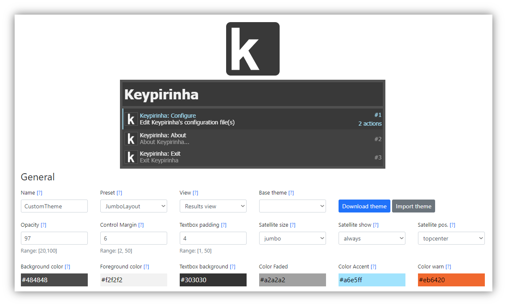
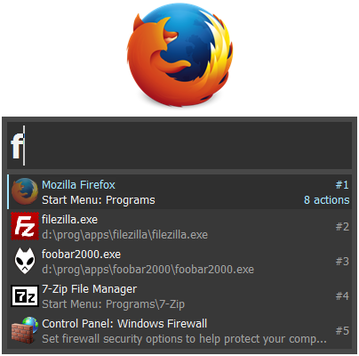
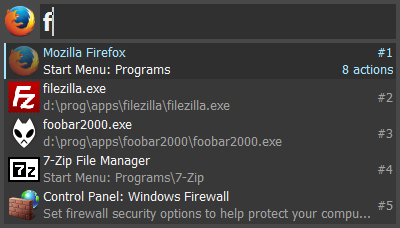
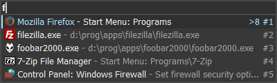
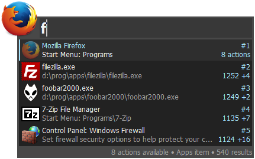
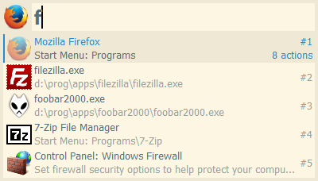
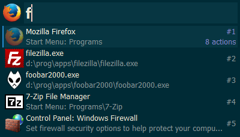
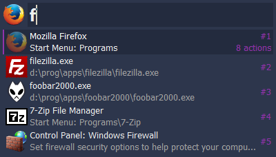
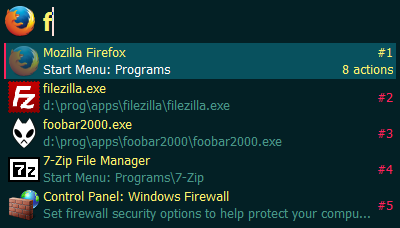
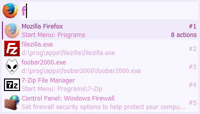

8. Theming¶
Since v2.14, Keypirinha GUI can be customized via the theme setting.
A more detailed description is available in the Keypirinha.ini default
config file.
8.1. Theme Builder¶
@Fuhrmann made an awesome color theme builder to ease the generation of your Keypirinha theme settings. Check it out here!
Do note however that Keypirinha also allows to change its GUI layout (i.e. not only its colors and fonts).
8.2. Predefined Official Themes¶
Below are some possible combinations of the themes that are available by
default. All those themes are defined in Keypirinha’s default configuration file,
search for the [theme/...] sections nearby the end of the file.
Tip
You can change the theme setting at runtime to visualize the new theme
while Keypirinha’s LaunchBox is displayed

[gui]
theme = JumboLayout

[gui]
theme = MediumLayout

[gui]
theme = TinyLayout

[gui]
theme = AnthraciteFull

[gui]
theme = MediumLayout, SolarizedLightColors

[gui]
theme = MediumLayout, SolarizedDarkColors

[gui]
theme = MediumLayout, PurpleNightColors

[gui]
theme = MediumLayout, ElectricStateColors

[gui]
theme = MediumLayout, PrincessColors